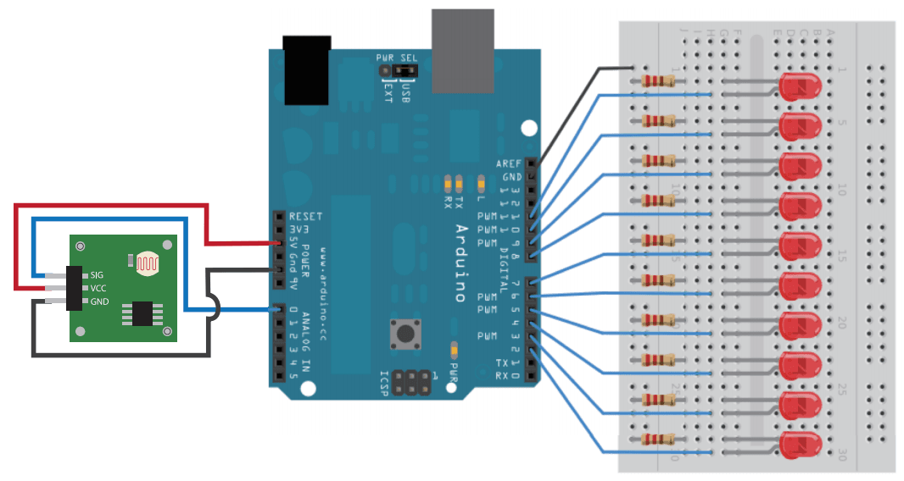

This demo will show you how to use light sensor. In order to indicate the intensity of light, we need a Led Bar.
Hardware Required：
Circuit：
The output of Light Sensor is analog signal, so we connect it to A0 of Seeeduino.
LED Bar needs 10 IOs, about the connection, please refer to LED Bar.

Code:
Open Arduino IDE, click File -> Sketchbook -> light_sensor.
We can use analogRead() to read the value of light sensor, this value will indicate the intensity of light. When the light stronger, the value larger.
To make the data more smoothly, we need some simple filtering. We read the value 32 times, and take the average value.
Reference
Copyright (c) 2008-2016 Seeed Development Limited (www.seeedstudio.com / www.seeed.cc)